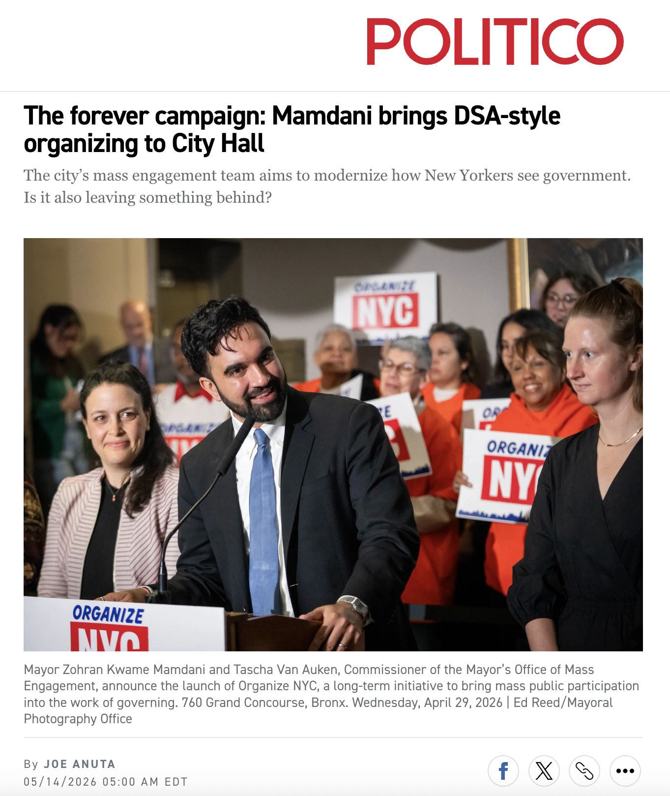

Draft notes. Liz McKenna and Patrick Hunter.
Governing through it is another.
Aotearoa, Canada. Formal Crown–Iwi authority over natural resources.
Ansell & Gash (2008). Public agencies plus stakeholders, consensus-oriented, technocratic.
Ostrom (1990); Porto Alegre PB (suspended 2017 after PT lost locally).
Engler & Engler (2022). Durable relationships between grassroots organizations and movement candidates in office.
U.S. organizers borrow vocabulary from all four. They mostly mean the fourth, and the fourth is the most undertheorized.
Movements are most effective when they combine disruption with institutional pressure, simultaneously, not sequentially.
Example: ACT UP staged die-ins on Wall Street and shut down the FDA, while simultaneously serving on FDA advisory committees that approved AIDS drugs.
Tarlau theorizes how an allied movement or base engages the state.
She leaves open the prior question: what enables that base to engage effectively in the first place?
Her eight design principles describe what a group must be to act as a co-governing partner.
An organized base is structurally a commons (trust, attention, capacity), vulnerable to free-riding, requiring governance rules to sustain.
People-first co-governance travels where Ostrom conditions are met in the meso-level base.
Where they aren't, you get the appearance of co-governance without the substance.

Freshly elected NYC mayors often hire from their campaign. They usually don't build a scale model of it inside City Hall. Politico NY, day 100
A canvassing playbook honed by DSA, perfected by 140,000 loyal foot soldiers, and now underwritten by taxpayers. Politico NY
Government should belong to the people it serves, not just the powerful and well-connected. Our work is about making that belief real. Tascha Van Auken, Commissioner, Mayor's Office of Mass Engagement
They've trained, harnessed and are now keeping alive this army of organized people. It's not illegal, but it raises concerns. Democratic strategist, to Politico
The reason we have to be so careful is the media wants the split narrative. They're always looking for moments where DSA, or the broader left, and Zohran are out of step, because they want to weaken both him and us. Grace, NYC-DSA co-chair
People say this all the time after campaigns, but they do not always mean it. We mean it: the fight is not over. Arielle, post-election DSA call
We can keep the good vibes and the canvass vibes from the Zohran campaign going. We will do this together as socialists, as DSA. Arielle, post-election DSA call
The first co-governance test, running right now.
Mamdani endorses Governor Hochul as part of a deal on state childcare funding. DSA gets 24 to 48 hours of notice. The endorsement collides with two campaigns DSA is actively running (tax the rich, and support for the NYSNA strike against Hochul's executive orders enabling hospitals to hire scabs). The steering committee meets in emergency session and drafts a near-censure of the mayor. After negotiation with the administration, the statement softens. In exchange, the administration agrees to weekly meetings with senior officials and biweekly meetings with the mayor himself. These meetings did not exist before.
When Zohran endorsed Hochul, it was really annoying. They gave us a couple (maybe a day or two) heads up, but not enough for us to change any strategy or shift a narrative. Grace, NYC-DSA co-chair
The target of the campaign had always been Hochul, and then Zohran tells us he's endorsing Hochul. This was in the midst of the NYSNA strike, where she had been issuing executive orders enabling hospitals to hire scabs more easily. Grace, NYC-DSA co-chair
Steering committee had an emergency meeting. We wrote a statement that was basically almost a censure of Zohran. As a courtesy, we sent that to the administration before we put it out, and they called us and asked us to edit it. Grace, NYC-DSA co-chair
One thing that demonstrates Zohran and his core team's commitment to DSA is that they weren't just like, "Well, fuck you guys." They took that very seriously. Grace, NYC-DSA co-chair
That's when we started having regular meetings, not only with senior administrative officials, which we do every week now, but also with Zohran himself. We meet every other week. Grace, NYC-DSA co-chair
Elle was like, "Okay, something is not working. The kind of inside-outside communication is not effective. We need to fix this." Grace, NYC-DSA co-chair
Someone in the administration implied there was no world in which DSA would have agreed Zohran should endorse Hochul. Grace's response:
There may not have been. But you also didn't explain your thinking to us. We never knew the trade-offs until you told us what the decision was. Grace, to Elle
"The trust is there, but the trust is not enough without structure.
And we need creativity to figure out what the structure should be." Grace, NYC-DSA co-chair
We are part of a broader left movement. Government in the state is but one element of how people are free in our society. Elle Bisgaard-Church, Chief of Staff
The field program teaches skills of organizing: a way to create tenant organizers, people who go on to form unions in their workplaces. All in addition to how government should actually respond. Elle Bisgaard-Church, Chief of Staff
I was so far left that I wasn't even on the Obama train. The failures of that administration, the waves of hope and disappointment. In many ways, our campaign is still in a related cycle. Andrew Epstein
You've been the anti-establishment, now you're the establishment, but you didn't need the establishment to get there. We're experiencing this while governing. Elle Bisgaard-Church
It's really about pivoting away from the guy and toward the collective project. Cea Weaver
Zohran can say to his people: I need your help to govern this city. The way you can help is by getting on your community board. I want people on the community board. I want people on the Rent Board. I want tenant associations as sites of resistance. Cea Weaver
He's not going to succeed if it lives and dies with him. We have to deliver to make people believe. Cea Weaver
That 17,000 (repeat volunteers) is more interesting to me than the 80,000. That's where you're building the power. Cea Weaver
What Zohran accomplished is the next modern-day iteration of the Rainbow Coalition. Michael Lang, political analyst, post-election DSA call
Dinkins won in 1989 under similar circumstances. Four years later he ran in a rematch with Giuliani with almost the same coalition and lost very narrowly. This coalition, beautiful as it is, is strong but also fragile. Michael Lang, post-election DSA call
Three open questions for the draft:
We'd love your thoughts!
McKenna & Hunter · 2026-05-15
Explore the coalition data: lizmckenna.github.io/mamdani-endorsements